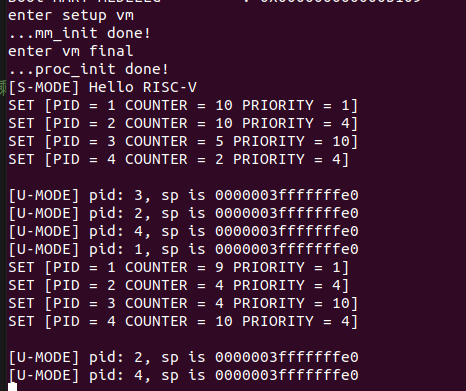

sstatus 来完成内核态转换至用户态。处理器具有两种不同的模式：用户模式和内核模式。在内核模式下，执行代码对底层硬件具有完整且不受限制的访问权限，它可以执行任何 CPU 指令并引用任何内存地址。在用户模式下，执行代码无法直接访问硬件，必须委托给系统提供的接口才能访问硬件或内存。处理器根据处理器上运行的代码类型在两种模式之间切换。应用程序以用户模式运行，而核心操作系统组件以内核模式运行。
系统调用是用户态应用程序请求内核服务的一种方式。在 RISC-V 中，我们使用 ecall 指令进行系统调用。当执行这条指令时处理器会提升特权模式，跳转到异常处理函数处理这条系统调用。
Linux 中 RISC-V 相关的系统调用可以在 include/uapi/asm-generic/unistd.h 中找到， syscall(2) 手册页上对RISC-V架构上的调用说明进行了总结，系统调用参数使用 a0 - a5 ，系统调用号使用 a7 ， 系统调用的返回值会被保存到 a0, a1 中。
当页表项 PTE[U] 置 0 时，该页表项对应的内存页为内核页，运行在 U-Mode 下的代码无法访问。当页表项 PTE[U] 置 1 时，该页表项对应的内存页为用户页，运行在 S-Mode 下的代码无法访问。如果想让 S 特权级下的程序能够访问用户页，需要对 sstatus[SUM] 位置 1 。但是无论什么样的情况下，用户页中的指令对于 S-Mode 而言都是无法执行的。
当用户态程序在用户态运行时，其使用的栈为用户态栈，当调用 SYSCALL时候，陷入内核处理时使用的栈为内核态栈，因此需要区分用户态栈和内核态栈，并在异常处理的过程中需要对栈进行切换。
修改 task_init
U-Mode Stack 以及 S-Mode Stack， 其中 S-Mode Stack 在系统二实验六中我们已经设置好了。我们可以通过 kalloc 接口申请一个空的页面来作为 U-Mode Stack （需要区分好 U-Mode Stack 在 kalloc 时的地址 / 在用户态下的地址 / 真实物理地址 之间的区别，见下图）。uapp 所在页面、以及 U-Mode Stack 做相应的映射。U-Mode 和 S-Mode 切换的时候切换页表，我们也将内核页表 （ swapper_pg_dir ） 复制到每个进程的页表中。sepc 修改为 USER_START， 设置 sstatus 中的 SPP （ 使得 sret 返回至 U-Mode ）， SPIE （ sret 之后开启中断 ）， SUM （ S-Mode 可以访问 User 页面 ）， sscratch 设置为 U-Mode 的 sp，其值为 USER_END （即 U-Mode Stack 被放置在 user space 的最后一个页面）。xxxxxxxxxx331for(int i = 1; i < NR_TASKS; i++) { 2 task[i] = (struct task_struct *)kalloc(); 3 task[i]->state = TASK_RUNNING;4 task[i]->counter = 0;5 task[i]->priority = rand();6 task[i]->pid = i;7 task[i]->thread.ra = __dummy;8 task[i]->thread.sp = (uint64)task[i] + PGSIZE;9
10 //set SUM(bit 18, so kernel mode can access user mode page), 11 //set SPIE(bit 5, so interruption is enabled after sret), 12 //set SPP to be 0, so after calling mret, the system can return to user mode 13 task[i]->thread.sstatus = csr_read(sstatus);14 task[i]->thread.sstatus = task[i]->thread.sstatus | 0x00040020; 15 csr_write(sstatus, task[i]->thread.sstatus); 16
17 task[i]->thread.sepc = USER_START;18 task[i]->thread.sscratch = USER_END;19
20
21 unsigned long * user_stack = kalloc();//用户栈的物理地址22 unsigned long* rootPGT = kalloc();////页表的物理地址 23
24 task[i]->pgd = (unsigned long)rootPGT - PA2VA_OFFSET;25 for (int i = 0; i < 512; i++)26 {27 rootPGT[i] = swapper_pg_dir[i];28 }29
30 //create_mapping(uint64 *pgtbl, uint64 va, uint64 pa, uint64 sz, int perm)31 create_mapping(rootPGT, USER_END-PGSIZE , (unsigned long )user_stack - PA2VA_OFFSET, PGSIZE , 0b10111);32 create_mapping(rootPGT, USER_START , (unsigned long)uapp_start-PA2VA_OFFSET, (unsigned long)uapp_end - (unsigned long)uapp_start, 0b11111);33}sepc, sstatus, sscratch 以及切换页表的逻辑。xxxxxxxxxx131 csrr t0, sepc2 sd t0,152(a0)3 csrr t0, sstatus4 sd t0, 160(a0)5 csrr t0, sscratch6 sd t0, 168(a0)7 8 ld t0, 176(a1) #pgn9 srli t0, t0, 12 #以4kb页面大小为单位10 li t1, (8 << 60) #设置MODE 11 or t2, t0, t112 csrw satp, t213 sfence.vma zero, zeroU-Mode 下， 使用的运行栈也是 U-Mode Stack， 因此当触发异常时， 我们首先要对栈进行切换 （ U-Mode Stack -> S-Mode Stack ）。同理，当我们完成了异常处理， 从 S-Mode 返回至 U-Mode， 也需要进行栈切换 （ S-Mode Stack -> U-Mode Stack ）。__dummy。在 4.2 中 我们初始化时， thread_struct.sp 保存了 S-Mode sp， thread_struct.sscratch 保存了 U-Mode sp， 因此在用户线程一开始被调度时（一开始用户线程会从 __dummy 开始运行，此时处于 S-Mode，sret 后会进入 U-Mode），我们只需要从 sscratch 中读取 U-Mode sp，将当前 sp 寄存器（即 S-Mode sp ）写入 sscratch ，将 U-Mode sp 放入当前 sp 寄存器，这样在sret 进入 U-Mode 时，使用的就会是 U-Mode Stack。 xxxxxxxxxx51__dummy:2 csrrw sp, sscratch, sp3 la t0, 04 csrw sepc, t05 sret_traps 。同理在 _traps 的首尾我们都需要做类似上一步的操作。注意如果是 内核线程( 没有 U-Mode Stack ) 触发了异常，则不需要进行切换。需要在 _trap 的首尾都对此情况进行判断。（内核线程的 sp 永远指向的 S-Mode Stack， sscratch 为 0）xxxxxxxxxx111_traps:2 csrr t2, sscratch3 beqz t2, notUser14 csrrw sp, sscratch,sp5notUser1:6 addi sp, sp, -2727 csrr t1, sstatus8 sd t1, 264(sp)9 csrr t1, sepc10 sd t1, 256(sp)11 ……uapp 使用 ecall 会产生 ECALL_FROM_U_MODE exception。因此我们需要在 trap_handler 里面进行捕获。xxxxxxxxxx251struct pt_regs {2 unsigned long x0,ra,sp,gp,tp;3 unsigned long t0,t1,t2,s0,s1,a0,a1,a2,a3,a4,a5,a6,a7;4 unsigned long s2,s3,s4,s5,s6,s7,s8,s9,s10,s11,t3,t4,t5,t6;5 unsigned long sepc;6 unsigned long sstatus;7};8
9void trap_handler(unsigned long scause, unsigned long sepc, struct pt_regs *regs ) {10 if (scause == 0x8000000000000005) {11 //printk("[S] Supervisor Mode Timer Interrupt\n");12 clock_set_next_event();13 do_timer();14 } 15 else if(scause == 8){16 if(regs->a7 == 64){//write17 sys_write(regs->a0, regs->a1, regs->a2);18 } 19 else if(regs->a7 == 172){//getpid20 regs->a0 = sys_getpid();21 }22 regs->sepc =((unsigned long)regs->sepc) + (unsigned long)4;23 }24 return ;25}本次实验要求的系统调用函数原型以及具体功能如下：
sys_write(unsigned int fd, const char* buf, size_t count) 该调用将用户态传递的字符串打印到屏幕上，此处fd为标准输出（1），buf为用户需要打印的起始地址，count为字符串长度，返回打印的字符数。( 具体见 user/printf.c )sys_getpid() 该调用从current中获取当前的pid放入a0中返回，无参数。（ 具体见 user/getpid.c ）增加 syscall.c, syscall.h 文件， 并在其中实现 getpid 以及 write 逻辑。
xxxxxxxxxx81extern struct task_struct* current; 2void sys_write(unsigned int fd, const char* buf, unsigned int count){3 printk("%s", buf);4}5
6int sys_getpid(){7 return current->pid;8}main() 中直接调用 schedule()。schedule() 注意放置在 test() 之前。
系统调用的返回参数放置在 a0 中，注意不可以直接修改寄存器， 应该修改参数 regs 中保存的内容。（为什么？请在思考题中回答）
针对系统调用这一类异常， 我们需要手动将 sepc + 4 。（为什么？请在思考题中回答）
sepc ( Supervisor Exception Program Counter ), 会记录触发异常的那条指令的地址。如果是错误引发的异常，需要系统处理完此指令运行的错误后，重新运行本指令，所以在trap返回时sret指令返回到sepc是没有问题的。将 head.S 中 enable interrupt sstatus.SIE 逻辑注释，确保 schedule 过程不受中断影响。（为什么？请在思考题中回答）
sstatus ( Supervisor Status Register )中存在一个 SIE ( Supervisor Interrupt Enable ) 比特位，当该比特位设置为 1 时，会对所有的 S 态异常响应， 否则将会禁用所有 S 态异常。